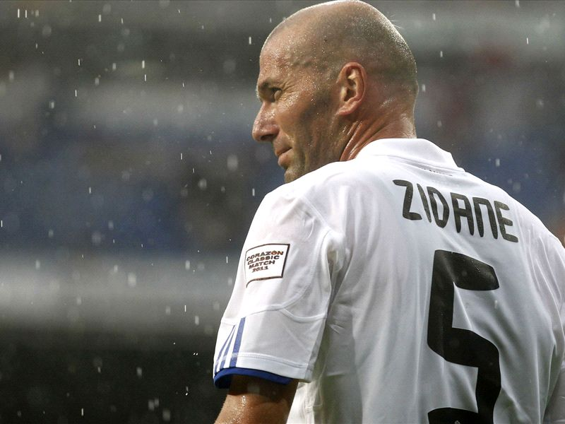

Zinedine Yazid Zidane
Greaterst Football Midfielder Ever Walked On Plante Earth

Zidane On Real Madrid Shirt
Here is a timeline of zidanes life....
- 1972 - Zinedine Yazid Zidane was born on 23 June Marseille, France.
- 1989 - Zidane made his professional debut with Cannes
- 1991 - scored his first goal for the club on 10 February.
- 1992 - Zidane was transferred to Girondins de Bordeaux
- 1994 - Earned his first cap with France.
- 1996 - He Moved to Juventas.
- 1998 - After single handedly destroying Brazil he in the world cup for France.And also the Ballon d'Or.
- 2000 - He won the EURO cup for France.
- 2001 - HE moved to Real Madrid with a record transfer fee.
- 2002 - He win the UCL with Real Madrid. And score the best goal in the hostory of the UCL Finals.
- 2006 - He reached world cup final with france and got a Red card. Also he announce retirement from football.
- 2009 - He bocome advisor of the Real Madrid president Florention Perez.
- 2011 - He become sproting director of Real Madrid./li>
- 2013 - He become assistant coach of Carlo Anchelotti at Real Madrid. And won the La-Desima. Real madrid's 10th UCL.
- 2014 - He appointed as coach of Castila.
- 2016 - He become Coach of Real Madrid. And won the UCL first time as a coach.
- 2017 - His best year as Maneger. He won 5 title including UCL and La Liga.
- 2018 - He again won UCL with Real Madrid. And resign from the club.
- 2019 - He came back as coach of Real Madrid.
- 2020 - During pandemic without any transfer he managed to win La-liga.
- 2021 - With 60 injuries in a season and without any transfer from the club he went a trophyless season. And resign from the club.
"Give me Zidane and 10 pieces of wood and I'll win you the Champions League."--Sir Alex Furguson
Read more about him from here Wikipidia